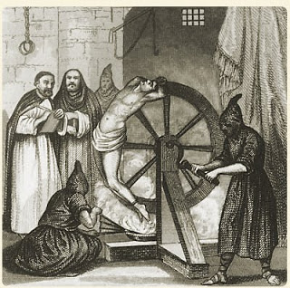

To prove that these sort of policed societies are a violation offered to nature ... it needs only to look upon the sanguinary measures, and instruments of violence, which are every where used to support them.
Let us take a review of the dungeons, whips, chains, racks, gibbets with which every society is abundantly stored, by which hundreds of victims are annually offered up to support a dozen or two in pride and madness, and millions in abject servitude, and dependence.
There was a time, when I looked with a reverential awe on these mysteries of policy, but age, experience and philosophy have rent the veil; and I view this sanctum sanctorum ... without any enthusiastic admiration.
-- Edmund Burke, A Vindication of Natural Society (1756)
Troy Meade killed Niles Meservey in the parking lot of Everett, Washington's Chuckwagon Inn last June 10. Meade shot the unarmed, intoxicated man seven times in the back. These facts are not in dispute.
In his recently concluded trial, Meade justified his lethal assault by describing it as self-defense: At the time of the shooting, the drunken Meservey was behind the wheel of his Corvette, and Meade was standing behind and to the left of the vehicle.

The jury rejected the claim of self-defense, because Meade was never in significant physical jeopardy. Meservey had plowed his car into a chain-link fence; if he had put the car in reverse, he wouldn't have hit Meade.
Trial testimony established that Meservey was not backing up when Meade pulled his gun. The wrecked Corvette was still embedded in the fence when the crime scene investigators arrived.
Meade was charged with first-degree manslaughter and second-degree murder. The same jury that rejected Meade's self-defense claim acquitted him of both counts.
Guilty on the facts, acquitted by the jury: Officer Troy Meade and his wife react to the verdict.
If the killing of Niles Meservey wasn't self-defense, how could it be something other than an act of criminal homicide?
Since Troy Meade is a police officer and his victim was a mere Mundane, this question typifies what Edmund Burke described as the "mysteries of policy" -- those special exemptions from the moral law claimed by the exalted beings controlling the state's apparatus of coercion.
Any other individual who killed a man under the circumstances recounted above would almost certainly be found guilty of criminal homicide. Because Meade was dressed in the sacerdotal vestments of the state's punitive priesthood, his lawless act of lethal violence was transmuted into an act of policy.
To borrow the expression used by the government ruling us when it audits the shortcomings of other officially established criminal syndicates, this was an "extra-judicial killing" -- a term found in descriptions of murder rampages carried out by police in such places as Nigeria, Pakistan, and Latin American dictatorships of yore. Meade's extra-judicial killing of Meservey was a form of "street justice" by way of summary execution.
"Time to end this -- enough is enough!" According to Officer Stephen Klocker, who was on the scene at the Chuckwagon on June 10 and on the stand as a prosecution witness at Meade's trial, this was what his fellow officer exclaimed as he drew his gun and killed Meservey.
Klocker, a 21-year police veteran, offered his testimony against his own professional interest -- and, as police whistleblowers elsewhere would attest, at some risk to his physical safety.
During the trial Everett's municipal government -- which faces a lawsuit by Meservey's family, and thus had an interest in seeing Meade acquitted -- took the remarkable step of providing the defense with documents intended to undermine Klocker's reliability as a witness. It is ironic, but hardly inexplicable, that the city government didn't make an issue of Klocker's credibility until he testified that another cop had killed a citizen without legal cause or justification.
According to the jury, this purely discretionary killing was not a criminal act. Apparently the lethal fusillade was just an unusually assertive way to bring "closure" to an encounter between an obstreperous drunk and a stressed-out police officer.
That encounter lasted less than a half hour. There were no exigent circumstances involved. By exercising minimal force and exposing himself to an all-but-undetectably small amount of personal peril, Meade could have deprived Meservey of his car keys, immobilizing him until he was either unconscious or cooperative.
Nah. Too risky. The only safe option here, obviously, was open gunplay.
The reasoning behind the verdict seems to be roughly this: "Sure, the circumstances didn't legally justify the use of lethal force, but we have no right to second-guess a decision reflecting the inscrutable wisdom of an agent of state authority."
Somewhere (eternal judgment not being my prerogative, I don't claim to know where) Joseph de Maistre, the 18th Century apostle of absolutism, is smiling with approval over the verdict in the Meade trial. In Meade's acquittal, Maistre would find vindication of his foundational authoritarian maxim:
"[A]ll greatness, all power, all social order depends on the executioner; he is the terror of human society and tie that holds it together. Take away this incontrovertible force from the world, and at that very moment order is superseded by chaos, thrones fall, society disappears."

In Maistre's vision of the world, terror is the foundation of "society." His contemporary, Edmund Burke, drew a crucial distinction between "artificial" or "policed" societies, on the one hand, and "natural" societies, on the other.
The latter are rooted in tradition and cooperation; the former are controlled through "sanguinary measures, and instruments of violence" -- institutionalized terror and officially sanctioned homicide.
Cheerfully oblivious to besetting reality, many still believe that our society is governed by laws, rather than the arbitrary will of individuals.
The morally contorted verdict in Troy Meade's trial offers a useful corrective by starkly illustrating that sanctified official violence is the foundation of the "policed society" in which we live.

Be sure to join me for Pro Libertate Radio on the Liberty News Radio Network.
Dum spiro, pugno!